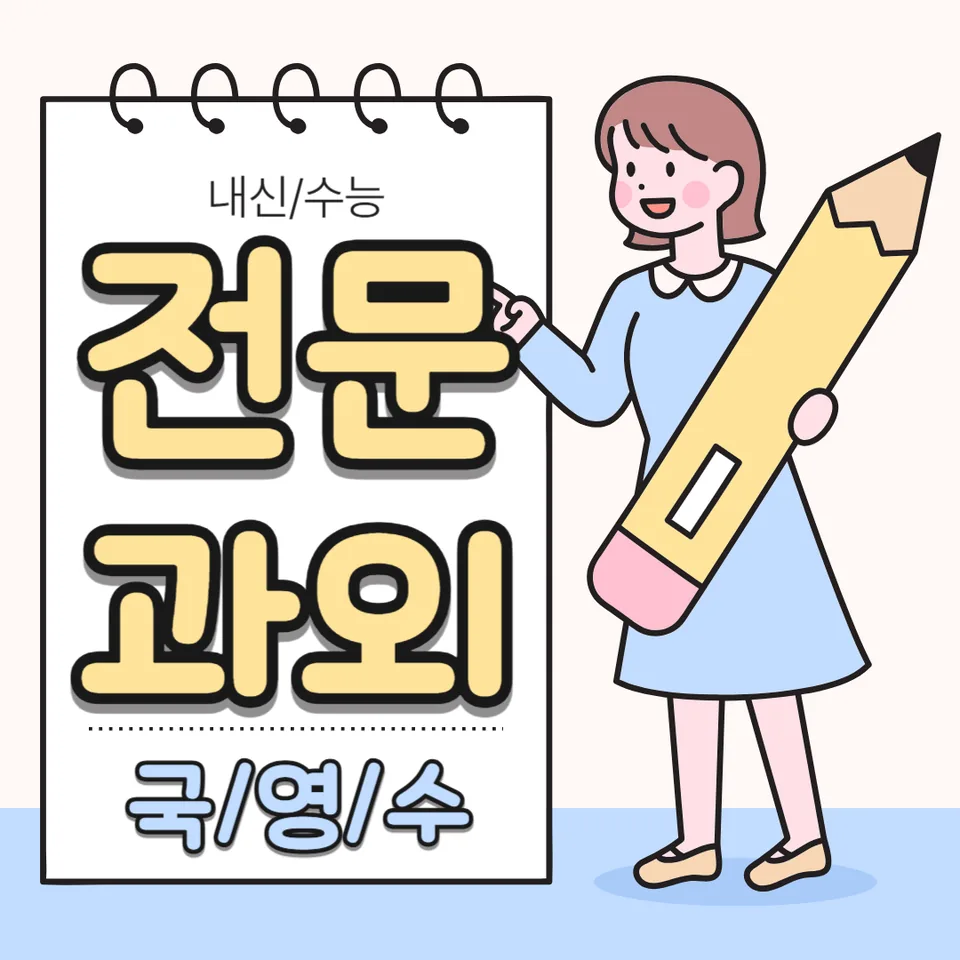

PageType : DONG
URL : /경기도과외/의정부시과외/녹양동과외/
지역 학습환경과 학생들의 변화
녹양동과외를 처음 찾는 학생들은 대부분 “공부는 해야 하는데 언제부터 어떻게”에서 막힙니다. 처음 상담에서 확인되는 공통점은 수업 시간보다 숙제 시작까지의 시간이 길다는 점입니다. 녹양동 학습 분위기는 비교적 안정적이어서, 학원처럼 복잡한 자극보다 “매일의 루틴”을 쌓는 학생이 점차 강해집니다. 그래서 녹양동과외에서는 목표 점수를 먼저 정하기보다, 학생이 스스로 공부를 시작하게 만드는 장면을 먼저 설계합니다.
예를 들어 같은 학교 친구라도 집에 돌아온 뒤 바로 필기구를 꺼내는 학생과, 휴대폰을 보고 나서야 책상에 앉는 학생의 격차는 주말에 더 크게 드러납니다. 녹양동과외를 통해 공부 시간이 늘어난 뒤에는 성적보다 먼저 태도가 바뀝니다. 문제를 풀기 전 “어떤 단원인지, 오늘 풀어야 할 문항 유형이 뭔지”를 먼저 확인하고, 오답을 버리는 대신 왜 틀렸는지 한 줄로 정리하는 방식이 자리 잡습니다. 이 변화가 누적되면 시험 직전에도 당황이 줄고, 수업 시간에 집중하는 속도가 빨라집니다.
학부모가 많이 고민하는 부분
학부모 상담에서 가장 자주 나오는 질문은 “꾸준히 시키면 성적이 오르나요, 아니면 방향을 다시 잡아야 하나요?”입니다. 녹양동과외를 통해 진단해보면, 많은 경우 성적 하락의 원인은 공부량이 아니라 공부의 순서입니다. 이해가 먼저인지, 문제부터인지, 오답을 기록하는 습관이 있는지에 따라 같은 시간을 공부해도 결과가 달라집니다. 특히 내신이 가까워질수록 부모는 ‘지금 더 해야 할 것’과 ‘버려야 할 것’을 구분하기가 어렵습니다.
그래서 녹양동과외는 가정에서의 실행력을 높이는 방식으로 진행됩니다. 숙제 목록을 무작정 늘리기보다 학생의 하루 리듬에 맞춘 과제 단위를 정하고, 학부모가 확인할 지점도 구체화합니다. 예를 들어 “오늘 몇 문제를 풀었는지”보다 “오늘 틀린 유형을 하나라도 말로 설명했는지”를 중심으로 점검합니다. 이렇게 하면 부모의 걱정이 ‘감(感)’에서 ‘관찰 가능한 변화’로 바뀌고, 학생도 도움을 받는 느낌이 분명해집니다.
학년이 올라갈수록 달라지는 공부
중간고사와 기말고사가 반복되는 시기에는 ‘열심히’가 중요하지만, 학년이 올라갈수록 ‘학습 설계’가 더 중요해집니다. 특히 상급 학년으로 갈수록 수업 속도가 빨라지고, 시험 범위가 넓어져서 단순 복습만으로는 한계가 생깁니다. 녹양동과외에서는 학년 전환 시점에 공부 방식 자체를 조정합니다. 하위 학년에는 개념을 붙잡고, 상위 학년에는 문제를 통해 개념을 재구성하게 만드는 흐름으로 바뀝니다.
또한 학년이 올라가면 학생의 과목 선택 고민도 본격화됩니다. 수학은 유형 누적이, 영어는 서술형과 독해 속도, 국어는 지문 해석과 문항 분석이 성적을 가릅니다. 이때 녹양동과외는 “오늘 풀어야 할 문제의 목적”을 먼저 정리합니다. 풀이를 빨리 하는 연습이 아니라, 왜 그런 선택을 하는지 설명 가능하게 만드는 훈련을 통해 시험장에서 흔들리지 않는 형태를 만듭니다.
학교생활과 내신 준비
학교생활에서 가장 영향이 큰 요소는 수업 태도와 필기의 질입니다. 녹양동과외를 받는 학생들 중 성적이 빠르게 오르는 학생은 방과 후에 책상에 앉는 시간이 길어서가 아니라, 수업 중에 놓치는 핵심이 줄어듭니다. 학교에서 배운 내용을 토대로 과제를 설계하면, 시험 전 “이미 본 내용”이 늘어나고 불안감이 줄어듭니다. 특히 국어·사회·과학처럼 서술형이 섞이는 과목은, 수업에서 만든 문장 틀을 과제로 반복하며 완성도가 올라갑니다.
내신 준비 과정에서는 ‘범위’보다 ‘문항 방식’을 따라가는 것이 더 빠릅니다. 같은 단원이라도 학교별 출제 경향이 다르기 때문에, 녹양동과외에서는 시험 문항의 유형을 먼저 분류해 훈련합니다. 이후 체크리스트로 학생이 스스로 점검하도록 유도하면, 시험 기간에 급하게 외우는 방식이 줄고 설명 가능한 답을 만들 수 있습니다.
자기주도학습이 중요한 이유
자기주도학습은 단순히 혼자 공부하는 능력이 아닙니다. 무엇을, 어떤 순서로, 어느 정도까지 할지 스스로 판단하는 과정입니다. 녹양동과외에서는 학생이 “오늘 끝낼 기준”을 잡도록 돕습니다. 예를 들어 수학이라면 단순히 문제 수를 채우기보다, 특정 유형에서 정답률을 어떻게 만들지 기준을 둡니다. 영어는 독해 지문을 읽는 방식(문장 구조 확인, 근거 문장 체크)을 먼저 정리합니다.
이 과정이 쌓이면 공부 시간이 줄어드는 학생도 있습니다. 이해가 빨라져서 불필요한 재풀이가 줄고, 오답이 다음 날 학습으로 연결되기 때문입니다. 결과적으로 자기주도학습은 성적을 ‘운’이 아니라 ‘습관’으로 바꾸는 장치가 됩니다. 녹양동과외는 바로 그 연결 고리를 만들어, 학생이 혼자서도 다시 일어설 수 있게 만드는 데 집중합니다.
공부 습관이 성적에 미치는 영향
성적은 단기간에 한 번의 노력으로 올라가는 것처럼 보이지만, 실제로는 습관의 누적이 수치로 나타납니다. 녹양동과외에서 반복해서 관찰되는 변화는 시작 습관, 회상 습관, 정리 습관입니다. 시작 습관은 “책상에 앉는 시간”보다 “첫 행동의 종류”로 드러납니다. 회상 습관은 예습이나 단순 읽기가 아니라, 어제 배운 내용을 떠올리게 만드는 질문으로 자리 잡습니다. 정리 습관은 오답을 버리지 않고, 틀린 이유를 특정 행동과 연결하는 방식으로 개선됩니다.
학생이 자신만의 방식으로 정리하기 시작하면 시험 전날에도 불안이 덜합니다. 이미 정리한 내용이 눈에 보이기 때문입니다. 또한 과목 간 학습도 균형이 좋아집니다. 한 과목만 몰아서 하던 학생은 “다음에 무엇을 할지”가 정해지니 다른 과목도 자연스럽게 이어집니다. 결국 공부 습관은 성적의 배경이 되고, 시험장에서 집중력을 유지하는 힘이 됩니다.
체크해야 할 학습 포인트
녹양동과외를 통해 점검할 때는 ‘열심히’라는 단어를 줄이고, 관찰 가능한 행동을 늘립니다. 아래 항목은 학생이 실제로 변화하고 있는지 확인하는 기준이 됩니다.
- 수업 후 24시간 내에 개념 확인을 했는지, 단순 독서로 끝나지 않았는지
- 오답을 “틀린 이유-다음 행동” 형태로 정리했는지
- 과제 시작 시간을 매일 비슷하게 유지하고 있는지
- 시험 대비 기간에 복습→유형 훈련→실전 점검 순서를 지키는지
이 체크가 반복되면, 시험이 가까워질수록 오히려 공부가 편해집니다. 학생이 다음 단계를 알고 있기 때문입니다. 부모도 확인이 쉬워져서 잔소리 횟수가 줄고, 학생은 스스로 목표에 다가가는 경험을 쌓습니다.
자주 묻는 질문
녹양동과외는 내신 성적이 바로 오르나요?
빠르게 오르는 학생은 있지만, 핵심은 ‘바로’보다 ‘바뀐 습관이 누적되는 속도’입니다. 수업 태도와 오답 정리가 자리 잡히면 중간고사부터 체감이 생기는 경우가 많습니다.
공부량이 적어도 효과가 있나요?
가능합니다. 같은 시간이라도 순서와 정리 방식이 다르면 결과가 달라집니다. 녹양동과외에서는 과제 단위를 조정해 학생의 실행력을 먼저 올립니다.
시험기간에는 어떻게 운영하나요?
복습→유형 훈련→실전 점검 흐름으로 계획합니다. 녹양동과외에서는 시험 직전에도 무작정 외우기보다, 약한 유형을 우선 보완하도록 시간표를 재배치합니다.
성적이 떨어지는 이유를 어떻게 찾나요?
단순히 부족한 부분을 찾기보다, 수업에서 놓친 포인트와 과제 수행의 순서 문제를 함께 봅니다. 학생의 필기 습관과 오답 처리 방식이 자주 원인으로 확인됩니다.
과목을 여러 개 동시에 해도 되나요?
가능하지만 균형이 중요합니다. 녹양동과외는 과목별 우선순위를 잡아주고, 자기주도학습이 유지될 만큼 현실적인 분량으로 조정합니다.
